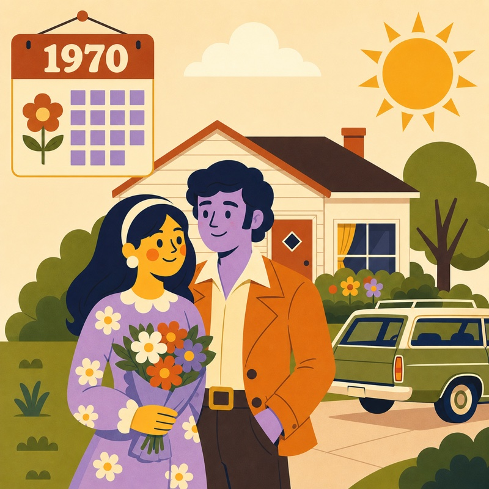
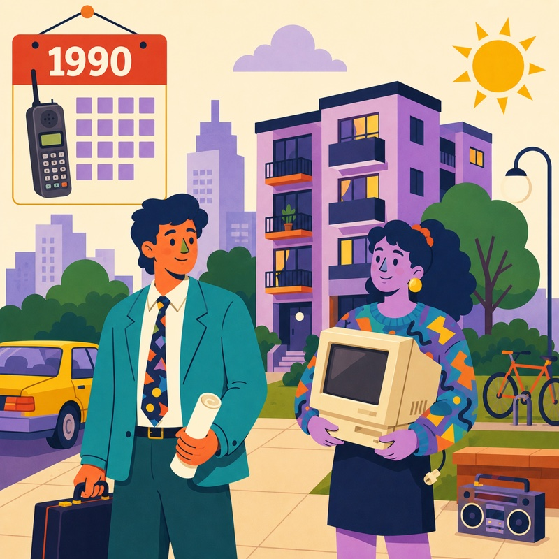
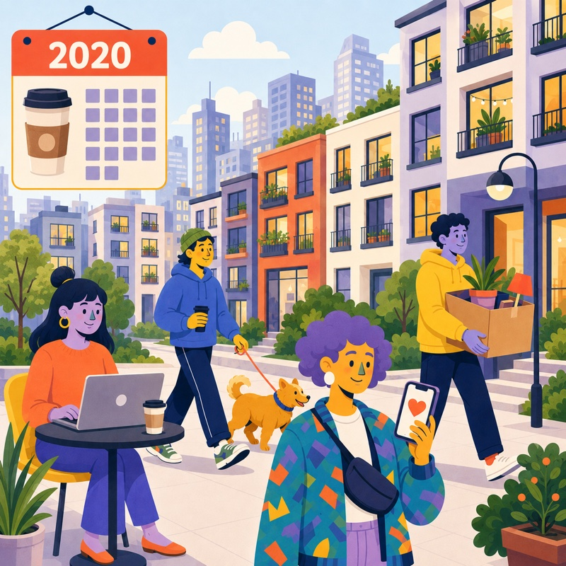

1970
86 in 100 married
Marriage came early and nearly universally. By their late twenties, most had a spouse, a home, and often kids.
In 1970, most young adults were married. Today, most aren't. Here's the shift — from 1970 to 2025.
Among Americans aged 25 to 34, the share who are married fell from 86 in every 100 in 1970 to just 34 in every 100 in 2025. Scroll down to explore the change — and to find out whether you would have been married.
Share of 25–34-year-olds who were married, 1970 to 2025.
Move through time and watch how the odds change.
Click Spin to see if you would be married in 1970

Marriage came early and nearly universally. By their late twenties, most had a spouse, a home, and often kids.

College and careers stretched the runway to adulthood. People married later, and apartments replaced starter homes.

Living solo, renting, and staying single into one's thirties is now the norm — not the exception.
Figures show the share of U.S. adults ages 25–34 who were married, per 100 people. Source: U.S. Census Bureau, "Living Arrangements" (2024), with marriage-rate figures for 2025 and earlier years drawn from Census Bureau data. census.gov